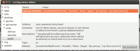
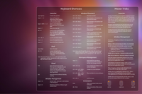

FAQ
Archivierte Anleitung
Dieser Artikel wurde archiviert, da er - oder Teile daraus - nur noch unter einer älteren Ubuntu-Version nutzbar ist. Diese Anleitung wird vom Wiki-Team weder auf Richtigkeit überprüft noch anderweitig gepflegt. Zusätzlich wurde der Artikel für weitere Änderungen gesperrt.
Anmerkung: Einige Teile des Artikels wurden ausgelagert, um ihn übersichtlich zu halten. Sollte man auf diesen Artikel stoßen – zum Beispiel durch einen älteren Link aus dem Forum – und hier nicht das Gewünschte finden, so schaut man am besten unter Unity/Tipps nach, ob die gesuchte Lösung dort beschrieben ist.
Zum Verständnis dieses Artikels sind folgende Seiten hilfreich:
- Hardware-Informationen
- Unterschiede Unity-2D und Unity-3D
- CompizConfig Einstellungs-Manager
- Unity zurücksetzen
- Compiz zurücksetzen
- Zusätzliches Panel
- Fensterdekoration zurücksetzen
- Design zurücksetzen
- Launcher
- Zwei Monitore
- Global Menü
- Panel Applets
- Liste aller Indikatoren
- Liste der Linsen
- Tastenkombinationen
- Ungelöste Probleme
- Links
 Dieser Artikel gehört zur Artikelserie über Unity, der neuen Desktop-Oberfläche ab Ubuntu 11.04. Er enthält kurze Abschnitte für Problemlösungen zu den verschiedensten Aspekten rund um Unity. Er soll als Erweiterung der anderen Artikel dienen, aber auch – als eine Art FAQ – häufig vorkommende Fragen aus dem Unity-Forum von ubuntuusers.de beantworten.
Dieser Artikel gehört zur Artikelserie über Unity, der neuen Desktop-Oberfläche ab Ubuntu 11.04. Er enthält kurze Abschnitte für Problemlösungen zu den verschiedensten Aspekten rund um Unity. Er soll als Erweiterung der anderen Artikel dienen, aber auch – als eine Art FAQ – häufig vorkommende Fragen aus dem Unity-Forum von ubuntuusers.de beantworten.
Hinweis:
Unter Ubuntu 12.04 verlangt der Unity-3D-Desktop auf dem Rechner ausreichende 3D-Beschleunigung. Beim Unity-3D-Desktop ist Compiz zwingende Voraussetzung. Wenn keine 3D-Beschleunigung vorhanden ist, funktioniert unter Ubuntu 12.04 nur Unity-2D. In den späteren Ubuntu-Versionen wurde Unity-2D entfernt, da dort Unity-3D auch ohne 3D-Beschleunigung funktioniert.
Hardware-Informationen¶
Der Unity-Hardware-Test ist sehr leicht ausführbar. Das Ergebnis liefert eine klare Aussage, ob die eingesetzte Hardware unter Ubuntu 12.04 Unity- und 3D-kompatibel ist. Dafür startet man im Terminal [1] wie folgt:
/usr/lib/nux/unity_support_test -p
Hinweis:
In diesem Zusammenhang ist es auch wichtig zu wissen, welche Grafikkarte eingesetzt wird. Dazu nutzt man den folgenden Befehl aus dem Artikel Systeminformationen ermitteln:
lspci -nnk | grep -i VGA -A2
Unterschiede Unity-2D und Unity-3D¶
Forenposting – enthält Bilder von Unity-2D und Unity-3D
Ob ich gerade Unity-2D oder Unity-3D nutze, kann ich aus dem Terminal [1] erkennen:
echo $DESKTOP_SESSION
Bei Ausgabe ubuntu wird Unity-3D genutzt.
CompizConfig Einstellungs-Manager¶
Der CompizConfig Einstellungs-Manager (auch CCSM abgekürzt) bietet umfangreiche Möglichkeiten, das Verhalten auf dem Bildschirm, das Aussehen diverser Komponenten, sowie die Eingriffe durch die Tastatur und die Maus einzustellen.
Unity zurücksetzen¶
Unity kann man sehr einfach in die Grundeinstellungen zurücksetzen. Man öffnet dazu nur ein Terminal [1] und gibt den folgenden Befehl ein. Beachten sollte man, dass alle vorher durchgeführten Einstellungen verloren gehen.
unity --reset
Anschließend sollte man den Rechner in jedem Falle neu starten.
Dieser Befehl setzt allerdings nur die Unity-Einstellungen zurück. Will man dazu auch den Launcher zurücksetzen, sieht man in den Abschnitt Launcher zurücksetzen.
Man kann, sollte dieser Versuch nicht das gewünschte Resultat bringen, auch versuchen, die Einstellungen in den jeweiligen Profildateien im Homeverzeichnis zu löschen:
rm ~/.gconf ~/.gconfd ~/.metacity ~/.compiz-1 ~/.config/compiz-1 ~/.config/dconf -rf
Ab Ubuntu 12.10, wurde 'unity --replace' aufgegeben. Stattdessen sollte man ausführen:
dconf reset -f /org/compiz/ unity --reset-icons &disown
Sollte die Änderung nicht unmittelbar greifen, abmelden und erneut anmelden. Hintergrund: die Einstellungen werden nun in 'dconf', statt in 'gconf' gespeichert.
Compiz zurücksetzen¶
Um Compiz zurückzusetzen, muss man ab Natty Narwhal (11.04) ein wenig anders vorgehen, als bis Maverick Meerkat 10.10, da die Compiz-Einstellungen in gconf im Pfad "/apps/compiz-1" und nicht mehr unter "/apps/compiz" zu finden sind [3]. Es gibt dazu drei verschiedene Wege. Der erste ist relativ ungefährlich, muss aber nicht das gewünschte Ergebnis bringen.
Lösungsansätze¶
Weg 1¶
Im Homeverzeichnis macht man die versteckten Dateien sichtbar, und navigiert zum Ordner .compiz/session. Dort findet man .xml-Dateien, die die jeweils letzten Einstellungen nach Datum sortiert enthalten. Die neueste .xml-Datei löscht man; nach einem Neustart sollte es wieder funktionieren.
Weg 2¶
Man kann versuchen, die Compiz-Konfiguration durch folgenden Befehl neu zu konfigurieren. Dazu öffnet man eine virtuelle Konsole.
Hinweis:
Man sollte kein normales Terminal öffnen, da das obere Panel und der Launcher nach Eingabe des nachfolgenden Befehls verschwinden. Stattdessen geht man den Weg über eine virtuelle Konsole.
Hat man diese geöffnet, gibt man dort folgende Befehle ein:
dpkg-reconfigure compiz
Mit der Tastenkombination Alt + Strg + F7 verlässt man die virtuelle Konsole und erreicht so wieder die grafische Oberfläche (Desktop). Wenn Unity nach diesem Befehl nicht korrekt aussieht, kann es sein, dass Unity dadurch abgeschaltet wurde. Ist dies der Fall, kann man Unity mit Hilfe des CompizConfig Einstellungs-Manager reaktivieren ("Kategorie „Arbeitsfläche“ " -> "Ubuntu Unity Plugin" aktivieren). Aus- und wieder einloggen kann ebenfalls helfen, Unity wieder normal aussehen zu lassen. Hilft dieser Weg nicht, kann man versuchen, sich mit mit dem folgenden Verfahren zu helfen.
Weg 3¶
Achtung!
Den folgenden Schritt sollte man nur durchführen, wenn man sonst alle anderen Optionen erfolglos versucht hat. Es kann zu irreparablen Schäden an Unity kommen, die ein unbenutzbares System hinterlassen (der Launcher und das obere Panel starten nicht mehr).
Um alle Compiz-Einstellungen zurückzusetzen (dies beinhaltet auch alle Plugin-Einstellungen), öffnet man ein Terminal [1]. Dies darf nicht über das Kommando Alt + F2 geschehen, da der einzugebene Befehl das obere Panel und den Launcher nach Eingabe des Befehls verschwinden lässt. Stattdessen wechselt man vorher auf eine virtuelle Konsole. Hat man die Konsole geöffnet, gibt man dort folgende Befehle ein:
gconftool-2 --recursive-unset /apps/compiz-1 unity --reset
Mit der Tastenkombination Alt + Strg + F7 verlässt man die virtuelle Konsole und erreicht so wieder die grafische Oberfläche (Desktop). Wenn Unity nach diesem Befehl nicht korrekt aussieht, muss man sich ab- und wieder anmelden. Danach ist in der Regel alles wieder gut.
Wackelnde Fenster¶
Hat man ein Problem mit „wackelnden Fenstern“ (wobbly windows), weil man im CompizConfig Einstellungs-Manager dieses Plugin aktiviert hatte oder dieses noch eine „Altlast“ aus Compiz unter Maverick Meerkat ist und nach dem Upgrade auf Natty Narwhal übernommen wurde, kann man dies über den folgenden Befehl in einem Terminal [1] beheben. Dazu muss man jedoch vorher auf eine virtuelle Konsole wechseln.
sudo killall compiz
Mit der Tastenkombination Alt + Strg + F7 verlässt man die virtuelle Konsole und erreicht so wieder die grafische Oberfläche (Desktop).
Danach überprüft man im CompizConfig Einstellungs-Manager, ob die „wackelnden Fester“ auch wirklich deaktiviert wurden.
Zusätzliches Panel¶
Es ist nicht vorgesehen, unter Unity ein weiteres Panel hinzuzufügen. Man kann allerdings das GNOME Panel starten (z. B. per
Alt +
F2 gnome-panel). Dann überdeckt allerdings das obere GNOME-Panel das obere Unity-Panel und damit das Globalmenü.
Mit  +
Windows +
Alt auf das obere Panel, kann man ein Menü zum Bearbeiten und Löschen des Panels öffnen. Nach dem Löschen oder Verschieben des Panels ist das Unity-Panel wieder sichtbar.
+
Windows +
Alt auf das obere Panel, kann man ein Menü zum Bearbeiten und Löschen des Panels öffnen. Nach dem Löschen oder Verschieben des Panels ist das Unity-Panel wieder sichtbar.
Fensterdekoration zurücksetzen¶
Es kann passieren, dass die Fensterdekoration abstürzt oder dass man diese selbst „verschandelt“ hat. Der folgende Befehl im Terminal eingegeben [1] setzt diese wieder zurück:
compiz --replace
Design zurücksetzen¶
Es kann passieren, dass das Design nicht richtig gestartet wird oder sogar abstürzt. Erkennbar ist das daran, dass der komplette Desktop eher „rudimentär“ aussieht: Das Panel ist grau, die Icons farblos und Programme wie zum Beispiel Nautilus sind ergraut. Folgender Befehl im Terminal [1] beendet und startet den „ergrauten“ GNOME-Settings-Daemon:
killall -9 gnome-settings-daemon && gnome-settings-daemon && nautilus -q
Launcher¶
Dieser Abschnitt behandelt den Launcher (auch genannt Starter), der sich auf der linken Seite befindet und Programme direkt starten kann. Siehe Unity/Unity Startmenü.
Starter erstellen¶
Wie man einen Starter anlegt, ist ausführlich im Artikel Programmstarter beschrieben. Auch im Artikel Unity/Unity Startmenü findet man Informationen dazu.
Ein weiteres Beispiel für Anpassungen des Launcher bieten Quicklists. Siehe dazu der nächste Abschnitt.
Quicklist erstellen¶
Man kann sich schnell und relativ einfach Quicklists erstellen. Das sind Listen, die Icons im Launcher um Funktionen erweitern. Chris hat in seinem Blog im Jahr 2011 Linux und ich  ein Beispiel für Quicklists für ubuntuusers.de erstellt .
ein Beispiel für Quicklists für ubuntuusers.de erstellt .
Aktuelle Beispiele für Quicklists finden sich in einem separaten Artikel Qicklists.
Launcher zurücksetzen¶
Man kann den Launcher zurücksetzen. Allerdings sollte man beachten, dass der Launcher dann wieder „jungfräulich“, wie nach einer Neuinstallation, aussieht – alle getätigten Einstellungen des Nutzers fallen diesem Schritt zum Opfer.
unity --reset-icons
Dies kann man auch manuell durchführen. Dazu gibt man im Terminal [1] den folgenden Befehl ein:
gsettings reset com.canonical.Unity.Launcher favorites
Danach ist es durchaus sinnvoll, Unity ebenfalls zurückzusetzen:
unity --reset
Zwei Monitore¶
Typische Probleme im Zwei-Monitor-Betrieb sind:
Launcher auf dem falschen Monitor (bis einschließlich Ubuntu 11.10)
Benachrichtigungen auf dem falschen Monitor
Da sich der Launcher (noch) nicht auf die andere Seite verschieben lässt und auch der Bereich, in dem die Benachrichtigungen angezeigt werden nicht ohne weiteres verschoben werden kann, ist die einfachste Lösung die Monitore im Displaymanager (oder im Catalyst Control Center) wie folgt zu konfigurieren:
Hauptmonitor mit Launcher und Benachrichtungen
Platzierung über dem zweiten Monitor
Als Primärmonitor festlegen
Bildschirmauflösung muss höher sein als auf dem Zweitmonitor (Da der Launcher immer auf dem Monitor mit der höheren Bildschirmauflösung angezeigt wird)
Zweitmonitor
Demzufolge muss die Bildschirmauflösung hier kleiner sein als die des Hauptmonitores.
Global Menü¶
Manche Anwender fühlen sich durch die Integration des Menüs in das Panel gestört. Um dies zu entfernen und die Menüs wieder in den jeweiligen Anwendungen anzeigen zu lassen, entfernt man das Paket indicator-appmenu z.B. mit
sudo apt-get remove indicator-appmenu
Ab Ubuntu 13.10 fehlen dann ein paar Menüeinträge in GNOME-Anwendungen (z.B. gedit). Um diese wieder sichtbar zu machen:
gsettings set org.gnome.settings-daemon.plugins.xsettings overrides '{"Gtk/ShellShowsAppMenu": <0>}' Panel Applets¶
Unity nutzt im Gegensatz zu GNOME nur sehr eingeschränkt Panel Applets. Als Panel Applets bezeichnet man die kleinen Symbole (Icons) oben rechts neben der Uhr, die zum Beispiel die Lautstärke oder das Netzwerk anzeigen. Manche Anwender möchten zusätzlich zu den Standard-Unity-Applets (dazu zählen Java, Mumble, Wine, Skype und hp-systray) gerne noch weitere Applets anzeigen lassen. Populäres Beispiel ist unter anderem Dropbox. Dazu nutzt man eine sogenannte Whitelist.
Egal, welche Methode man nutzt – anschließend muss man sich ab- und wieder neu anmelden, um die Änderungen sichtbar zu machen.
Im Terminal aktivieren¶
Der einfachste Weg, um alle Arten von Applets anzeigen zu lassen, passiert über das Terminal [1] . Dazu gibt man folgenden Befehl ein:
gsettings set com.canonical.Unity.Panel systray-whitelist "['all']"
Dies schaltet alle Applets frei, so dass diese angezeigt werden können. Möchte man hingegen nur ein Applet anzeigen lassen (in diesem Falle Dropbox), so nutzt man diesen Befehl:
gsettings set com.canonical.Unity.Panel systray-whitelist "['JavaEmbeddedFrame', 'Mumble', 'Wine', 'Skype', 'hp-systray', 'Dropbox']"
Per GUI aktivieren¶

Um die GUI zum Ändern der Anzeige zu nutzen, muss man sich erst das Paket dconf-tools installieren [3] . Dadurch erhält man das Programm dconf-editor. Ist das Paket installiert, erreicht man den Editor über die Tastenkombination
Alt +
F2 und nachfolgende Eingabe von dconf-editor. Weitere Informationen enthält der Artikel Unity/Unity Einstellungen.
Im Editor selbst navigiert man sich in der linken Spalte zu "com" → "canonical" → "unity" → "panel" und gibt dann in der rechten Spalte (Value) den Wert all ein. Möchte man hingegen nur, um beim Beispiel zu bleiben, Dropbox aktivieren, fügt man der existierenden Liste den Wert 'Dropbox' hinzu.
Applets zurücksetzen¶
Mit folgendem Befehl im Terminal [1] kann man die Voreinstellung wieder herstellen:
gsettings set com.canonical.Unity.Panel systray-whitelist "['JavaEmbeddedFrame', 'Mumble', 'Wine', 'Skype', 'hp-systray']"
Alternativen¶
In der unten stehenden Liste der Indikatoren finden sich Informationen zur Installation zahlreicher Alternativen, die der eine oder andere, der an die Flexibilität des GNOME-Panels gewöhnt war, bestimmt schon vermisst hat. Zum Beispiel das Wetter-Applet oder einen System-Monitor, die für das Unity-Panel ausgelegt sind.
Experten-Info:
Man beachte den Unterschied zwischen Benachrichtigungsfeld und Benachrichtigungsanzeige. Nur letztere sind "echte" Indikatoren speziell für Unity.
Liste aller Indikatoren¶
Eine Liste aller Indikatoren (Indicators) zeigen die folgenden Übersichten:
Liste der Linsen¶
Neben dem Artikel Unity Lenses stellt What lenses for Unity are available?  ist eine weitere umfangreiche Liste bereit.
ist eine weitere umfangreiche Liste bereit.
Tastenkombinationen¶
 Eine (englische) Übersicht der Shortcuts, die man in Unity nutzen kann, kann man dem nebenstehendem Bild entnehmen (Bildquelle unter Links; dort findet man auch eine deutsche Version). Einfach abspeichern und für den Anfang als Hintergrundbild benutzen. Auch der Artikel Unity/Unity Arbeitsbereich listet einige der Shortcuts auf.
Überblick der Tastenkombinationen¶
| Shortcut | Auswirkung |
| Launcher | |
| Windows (langes Drücken) | Startet den Launcher |
| Windows + 1 + 2 + 3 + 4 + 5 + 6 + 7 + 8 + 9 + 0 | Öffnet die im Launcher nummerierte Applikation |
| Windows + ⇧ + 1 + 2 + 3 + 4 + 5 + 6 + 7 + 8 + 9 + 0 | Öffnet eine neue Instanz der im Launcher nummerierten Applikation, auch wenn diese schon geöffnet ist |
| Windows + T | Öffnet den Mülleimer |
| Alt + F1 | Fokus auf den Launcher. Mit den Pfeiltasten ↑ + ↓ kann man nach oben/unten navigieren. Mit → zeigt man die Quicklist (sofern vorhanden) |
| Strg + Alt + T | Öffnet das Terminal |
| Windows + A | Öffnet das Applikationsmenü |
| Windows + F | Öffnet das Menü „Files and Folders“ |
| Dash | |
| Windows (kurzes Drücken) | Öffnet die Dash |
| Esc | Mit der Taste Escape schließt man die Dash wieder. |
| Alt + F2 | Öffnet die Dash zur Eingabe des Befehls Ausführen |
| Esc | Mit der Taste Escape schließt man das Menü Ausführen wieder. |
| Panel | |
| F10 | Öffnet die Menüs der einzelnen Indicators. Mit Hilfe der Pfeiltasten ← und → kann man durch selbige scrollen |
| Esc | Mit der Taste Escape schließt man die geöffneten Menüs wieder. |
| Fenstermanagement | |
| Windows + W | Ausdehnungsmodus: Alle offenen Anwendungen auf allen Desktops werden übersichtlich nebeneinander drapiert |
| Windows + D | Alle Fenster minimieren, um auf den Desktop zu gelangen. Eine erneute Eingabe maximiert alle Fenster wieder. (U.U., z.B. Ubuntu 11.10 64-bit, stattdessen Strg + Alt + D ) |
| Windows + S | Stellt alle Desktops übersichtlich dar. |
| Alt + Tab ⇆ | Ab Oneiric Ocelot kann man einen Umschalter aufrufen. Hiermit kann man alle Fenster - sowohl von der aktiven als auch den anderen Arbeitsflächen, in einem Umschalter sich anzeigen lassen und auswählen. Näheres zu den Einstellungen und der Anwendung siehe Unity Umschalter. |
Ungelöste Probleme¶
Naturgemäß gibt es bei Unity  noch einige ungelöste Probleme. Die Liste soll die wichtigsten und schwerwiegendsten wiedergeben:
noch einige ungelöste Probleme. Die Liste soll die wichtigsten und schwerwiegendsten wiedergeben:
File search should use Tracker when available (Siehe dazu der Thread Die Suchfunktion der Dash findet keine Dateien bzw. Dokumente, die noch nicht geöffnet wurden sowie How does Unity's dash index and search work?)
Links¶
intern¶
Unity
– ÜbersichtsseiteUnity/Tipps – Tipps und Tricks zu Unity
Unity-Unterforum auf ubuntuusers.de
extern¶
Beispiele zur Nutzung des CCSM:
Tastenkombinationen (Shortcuts):
Ubuntu 11.04 Tastenkürzel
- als PDF, SVG oder PNG; Blogbeitrag 04/2011Unity Shortcuts
- neue Version 07/2011softpedia.com: Ubuntu 11.04 Unity Keyboard Shortcuts and Tricks
Bildquelle
des oben verlinkten Bildes mit Tastenkombinationen
Unity zurücksetzen:
Compiz zurücksetzen:
Icons verschwunden:
Panel Applets (re)aktivieren/deaktivieren:
Quicklist:
"Unity aus Ubuntu 11.04 erklärt" - Artikelserie zu Unity auf Linux und ich:
- Erstellt mit Inyoka
-
 2004 – 2017 ubuntuusers.de • Einige Rechte vorbehalten
2004 – 2017 ubuntuusers.de • Einige Rechte vorbehalten
Lizenz • Kontakt • Datenschutz • Impressum • Serverstatus -
Serverhousing gespendet von